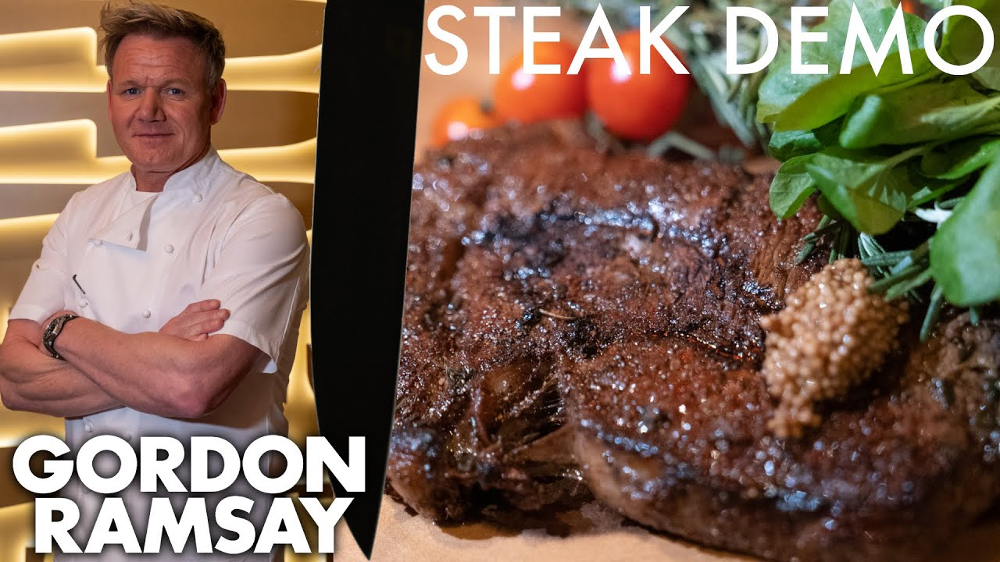

Gordon Ramseys Way of Cooking a Steak:
Ingredients
Instructions
To begin, pat the steaks dry with paper towels. Season the steaks all over with the salt and pepper. Turn on your exhaust fan and heat a heavy pan (preferably cast iron or stainless steel) over medium-high heat until it's VERY hot. Add the oil to the pan and heat until it begins to shimmer and move fluidly around the pan. Carefully set the steaks in the pan, releasing them away from you so the oil doesn’t splatter in your direction. The oil should sizzle. Leave the steaks alone! Avoid the temptation to peek or fiddle or flip repeatedly; the steaks need a few minutes undisturbed to develop a golden crust. Flip the steaks when they release easily and the bottom is a deep-brown color, about 3 minutes. Continue to cook the steaks for another 3 to 4 minutes on the second side for rare to medium-rare. (For medium, cook 4 to 5 minutes on second side; for well-done, cook 5 to 6 minutes on second side). During the last minute of cooking, add the butter and thyme sprigs to the pan with the steaks. If you are serving the steaks unsliced, transfer them to plates and serve hot. If you plan to slice the steaks, transfer them to a cutting board and let rest, covered with aluminum foil, for 5 to 10 minutes; then slice thinly against the grain.